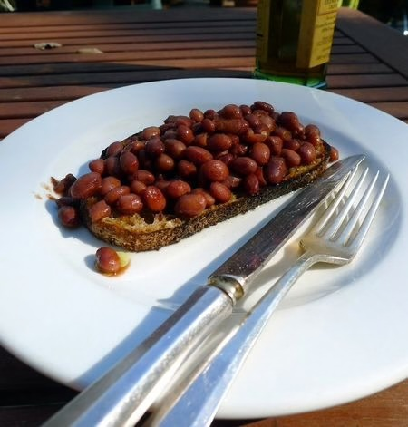

Tim's Beans on toast

Tim's beans on toast
Description
This is the only way to make beans on toast
Ingredients
- 210g Aldi or Branston backed beans
- Large slice of Aldi seeded sourdough bread
- Butter
Steps
- Toast the bread until it starts to smoke.
- Microwave the beans for 90 seconds (900 watt microwave)
- Thickly butter the toast.
- Pour the beans on to the toast